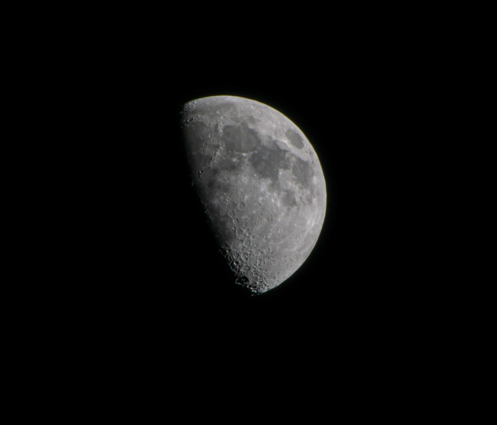
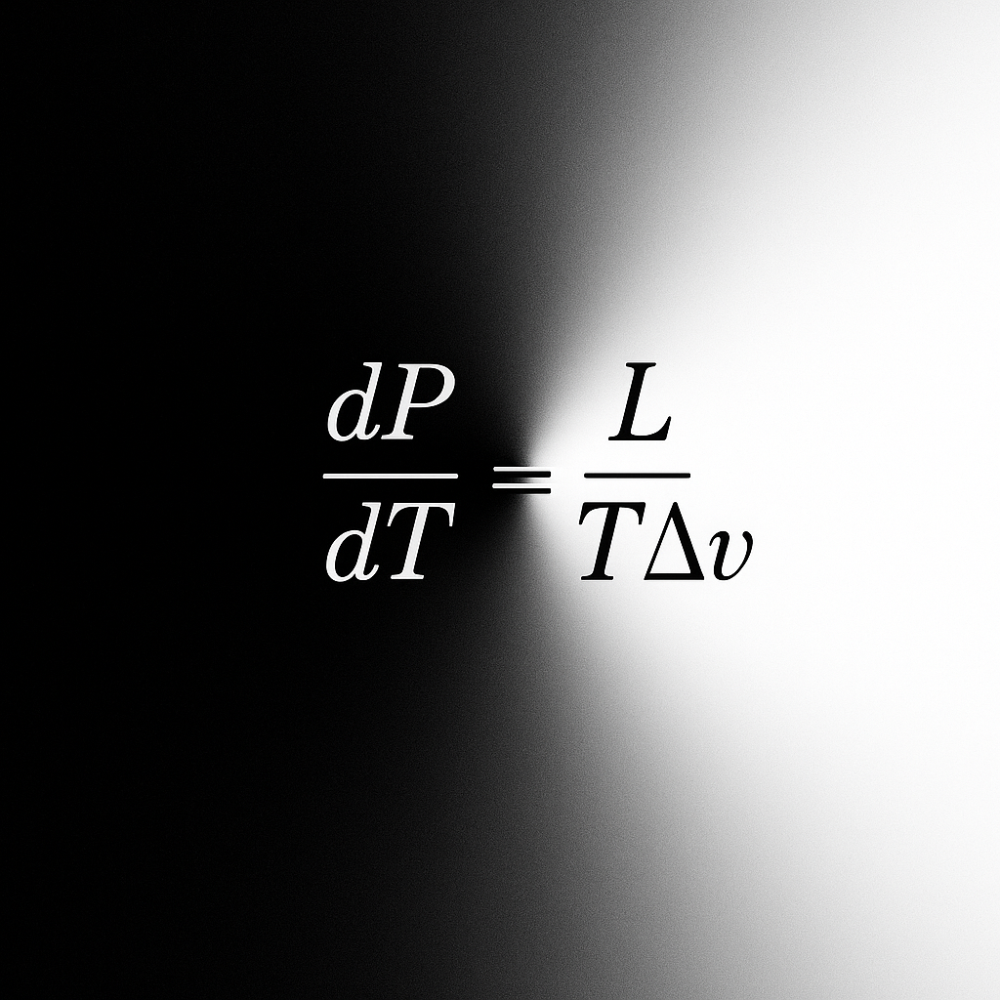
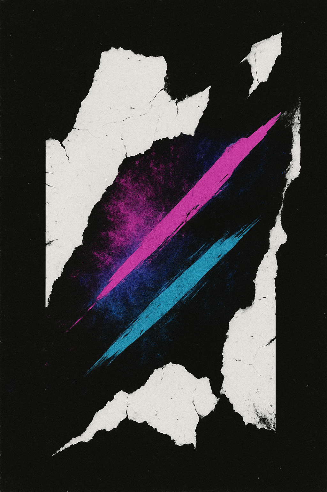
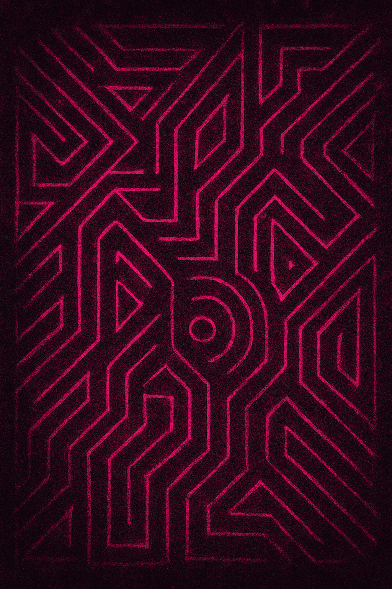

Medien
Diese Seite bietet einen Einblick in meine visuelle und kreative Arbeit. Sie zeigt ausgewählte Impressionen aus Fotografie, Musik, Design und digitalen Konzepten – als Sammlung von Ideen, Stilübungen und experimentellen Ansätzen.
Polarlicht über Nordhessen – Aufnahme des geomagnetischen Sturms vom Mai 2024

Spektrale Beugung – Lichtzerlegung durch Gitterinterferenz

Mondbeobachtung – Libration und Kraterstruktur bei zunehmender Phase

Clausius-Clapeyron-Beziehung – Temperatur-Druck-Gradient bei Phasenübergängen

Neonform I – Digitale Komposition mit additiver Farbmischung (Magenta / Cyan)

Neonform II – Strukturkomposition aus Rissmustern und Farbverläufen
Hinweis: Die hier dargestellten Inhalte dienen ausschließlich zur Veranschaulichung und sind persönliche künstlerische Arbeiten im Rahmen meiner freiberuflichen Tätigkeit. Alle Medien sind urheberrechtlich geschützt (§ 2 UrhG).